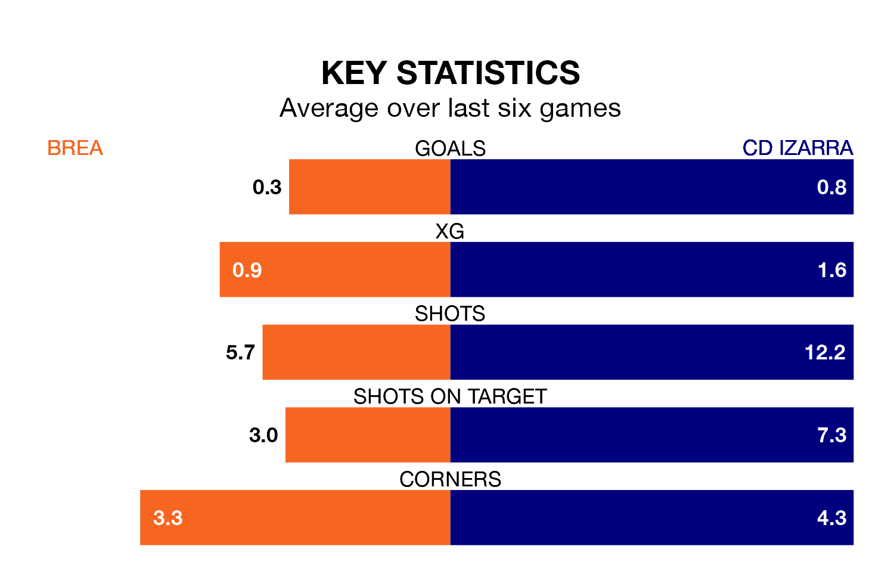

Sunday's early match at Estadio Municipal de Piedrabuena sees two relegation candidates play each other, as 16th-ranked Brea host 15th-placed CD Izarra.
Brea have picked up 12 points from their first 12 Segunda División RFEF Group 2 games, with three wins and three draws.
That is four points less than Izarra have collected, having won four and drawn four.
Brea are in terrible form in Segunda División RFEF Group 2, with no wins and a draw from their last six games.
With a win and three draws over that period, Izarra's form is better – they have taken six points from 18, compared to the home team's one.
With nine goals in 18 games so far this season, Brea are the league's joint-second-lowest scorers with 0.5 goals per game. And they are conceding more than average, letting in 29 goals at a rate of 1.6 per game.
The visitors are also below average scorers, with 0.9 goals per game, compared to a league average of 1.1. They have conceded 1.6 goals per game.
In the last three years, Brea and Izarra have played each other on three occasions. Brea won two of them and Izarra one.
Their last meeting was on September 10, when Brea won 1-0 away.
Brea's last match was on January 14, a 2-1 loss against UD Barbastro.
Izarra drew 2-2 with Gernika Club last time out, also on Sunday.
Updated: 06:13 (UTC), 18/01/24